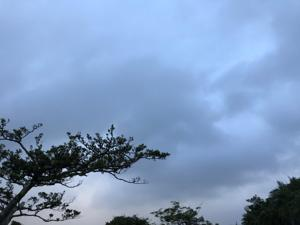
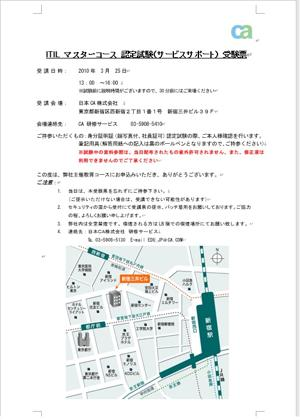
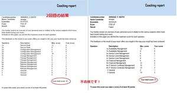
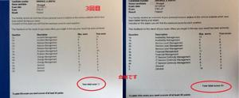

うるがいの話 ある日
最新: ３回目で合格【うるがいの話 ある日】とは 一日だけのプログです
『うるがいの話』の最新一日だけのプログで、通信料が少なく経済的だ。カニの画像をクリックすると全ての日付が載る『うるがいの話』サイトを表示します
|
|
【うるがいの話】 うるがい(ｳﾙｶﾞｲ urugai)とは、『もずくがに』の名前でとても大きくなります。 |
|---|---|
|
|
【カミマヤーの話】 猫のことを方言でマヤーといいます。カミマヤー（kamimayaa）とは、神の猫のことです。 |
|
【たながぁの音楽】 たながぁ（ﾀﾅｶﾞｰ tanagaa）とは手長えびのことで、何種類かあり大きいのは車 エビぐらいになります。 |

|
【ぶながぁの話】 ぶながぁ(ﾌﾞﾅｶﾞｰ bunagaa)とは、赤い髪の毛、赤い身体、そして身長は１ｍ２０ｃｍ ぐらい、川の蟹を食べているの目撃された。場所は沖縄県国頭郡大宜味村のと ある村僕の隣近所に住んでいる爺さんから、聞いた話です。 |
|
|
【ギーマの話】 ギーマ(giima)とは、山原の里山に咲くスズランに似た、 花を付けます。実は食べられます、 気が付くと口の周りが紫になっています。 |
2022年10月22日 (土）３回目で合格
19:41
   
小室さんが米ニューヨーク州の司法試験に合格した。久しぶりにいいニュース
である。そういう私も、とある資格に苦しい思いをして３回目の試験で合格し
た経験がある。一回目は２００９年９月だが、はなから一発で受かるとは思わ
ないのでテスト結果の記録もない。２回目は、２０１０年３月、全くだめであ
る。試験は自腹なので、さすがに３回目は真剣に試験対策を行って合格し、ホ
ットした （合格率は１０％～２０％ぐらい）。
昨日夕方からジョギングをすると、土砂降りにある。今日も、天気は雨の予報
で洗濯ものをどうすればいいのか、悩んだが。
＜師匠のつぶやき＞
たしか昨日まで、ウェザーニュースでは、今日は雨だったはず。
なのにこの天気
天皇皇后両陛下の魔法なのか…
１９時３４分 ビットコインの総資産 ￥８、１９６↑